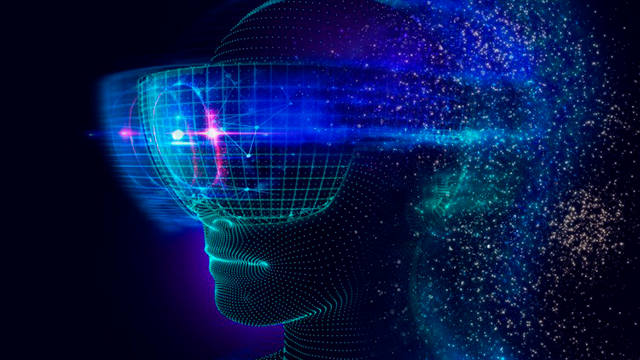

Blog
“Realidad virtual” y nuevos paradigmas
16 de junio de 2023


Los sentidos corporales, como la vista, el oído, el olfato, el gusto y el tacto, no solo nos permiten experimentar el mundo físico, sino que también nos brindan la oportunidad de conocernos a nosotros mismos y a los demás, para así generar y capturar valor en la sociedad, desarrollar nuestra sensibilidad espiritual y adquirir cualidades como la serenidad, la firmeza y la prudencia.
Existe otra serie de sentidos menos populares, como el térmico, las sensaciones motoras, el sentido del equilibrio y las sensaciones de dolor, que también desempeñan un papel importante en nuestra percepción y experiencia del mundo. Se destaca la importancia de la razón en el camino hacia el conocimiento y la búsqueda de la Verdad con el fin de elevarnos por encima de lo concreto y comprender la naturaleza de las cosas, encontrar la verdad y crear conocimiento a través de la ciencia y las artes.
Es curiosa en este sentido la denominada “realidad virtual” que desde su denominación constituye una contradicción en términos debido a la naturaleza misma de la realidad y su relación con la virtualidad. La realidad, en su esencia, se refiere a la existencia objetiva y tangible, por medio de los mencionados sentidos, del mundo que nos rodea, mientras que lo virtual se refiere a algo que es simulado, creado o representado mediante las tecnologías de la información y la comunicación, pero que también interpelan nuestros sentidos. Por lo tanto, al combinar estos dos conceptos, se genera una paradoja fundamental, ya que la virtualidad implica una separación de la realidad tangible y una incursión en un mundo construido, donde la experiencia percibida puede diferir de la realidad objetiva. Aunque la realidad virtual puede brindar experiencias inmersivas y fascinantes, es importante reconocer que, en última instancia, sigue siendo una construcción artificial que no puede replicar plenamente la complejidad y la totalidad de la realidad en su estado puro.
Estas nuevas tecnologías que prometen nuevamente revolucionar nuestra forma de percibir y experimentar el mundo a través de dispositivos e instrumentos de avanzada, nos transportan a mundos virtuales que estimulan nuestros sentidos de manera extraordinaria. Sin embargo, en este deslumbrante universo digital, se esconde otra paradoja inquietante. ¿Hasta qué punto estamos dispuestos a permitir que nuestros sentidos sean manipulados y controlados por estas creaciones artificiales? ¿Ocurrió alguna vez en otra época de la humanidad algo similar con los sentidos de nuestros antepasados?
A lo largo de la historia, la humanidad ha creado varias invenciones y tecnologías que han manipulado los sentidos de diferentes maneras: en su momento la fotografía, el cine, la manipulación de la velocidad, la aviación, y muchas otras, son en definitiva nuevos paradigmas que intervienen nuestra percepción del mundo conocido hasta el momento y cambian nuestras realidades para siempre, hasta que un día las damos por naturales. ¿Hasta dónde todas estas herramientas pueden caracterizarse dentro de los parámetros de la autenticidad del ser humano, si ha quedado desnaturalizado respecto a la “idea original” si es que la hubo?
La praxeología es una rama de la ciencias económicas poco explorada y que se centra en el estudio de la acción humana y sus consecuencias. Esta atractiva disciplina ha influido en diversos campos de estudio, incluyendo tanto a la filosofía como a la sociología y ofrece un marco conceptual para analizar y reflexionar sobre la relación entre la acción humana, la innovación tecnológica y los cambios constantes en la concepción de nuestra existencia. Al explorar estos temas desde una perspectiva filosófica, podemos profundizar en nuestra comprensión de cómo la especie humana evoluciona y se transforma a través de la razón y la capacidad de crear nuevas versiones de sí misma.
La realidad virtual, con su capacidad para sumergirnos en mundos alternativos, desafía los límites de nuestra percepción y nos invita a cuestionar la naturaleza misma de la realidad. Pero, al mismo tiempo, plantea interrogantes sobre la autenticidad y ante todo la autenticidad de nuestras experiencias sensoriales. ¿Podemos confiar plenamente en lo que vemos, oímos y sentimos en estos entornos simulados?
Varios exponentes de la literatura han elaborado sobre las realidades laberínticas y las ficciones infinitas. Sin duda escritores como Jorge Luis Borges, hubiesen encontrado en estas nuevas invenciones una fuente inagotable de inspiración. Los estilos poéticos y metafísicos de la apreciación de estas nociones podemos aprovecharlos para reflexionar en que si bien la manipulación de nuestros sentidos puede ser perturbadora, también puede ser una herramienta poderosa para explorar los límites del conocimiento y la imaginación: viajar a lugares remotos, sumergirse en mundos imaginarios, vivir experiencias emocionantes y peligrosas de manera segura, son solo algunos cambios de paradigma que esta era nos propone. La realidad virtual, en su esencia, nos ofrece una oportunidad única de adentrarnos en los recovecos más profundos de nuestra mente, donde la línea entre lo real y lo ilusorio se desvanece.
Es crucial recordar, que como con todo, el verdadero poder de estas nuevas tecnologías, reside en la forma en que las utilizamos. Si nos entregamos ciegamente a sus encantos y permitimos que controle nuestras percepciones sin cuestionar, nos arriesgamos a perder nuestra conexión con la esencia misma de lo humano. Pero si somos conscientes de su potencial y la empleamos con sabiduría, la realidad virtual puede convertirse en una herramienta de expansión y enriquecimiento de nuestra mente y espíritu, en el contexto de la ciencia, la medicina, el comercio, el turismo… la vida.
En última instancia, estos avances nos desafían a explorar la relación entre nuestros sentidos, la percepción y la verdad misma. A través de la reflexión y la filosofía, podemos encontrar un equilibrio entre la maravilla y la cautela, entre el descubrimiento y la autenticidad. Quizá la clave radique en recordar que, aunque estas oportunidades de la historia nos ofrecen nuevas fronteras para explorar, somos nosotros, como seres humanos conscientes, quienes debemos decidir cómo navegar por este fascinante y desconcertante paisaje de realidades alternativas.
Más que respuestas, esta nueva era nos invita a plantear algunos cuestionamientos: ¿Qué impacto tienen las experiencias inmersivas en la percepción de la realidad y la construcción de la identidad individual?, ¿Cuáles son las implicaciones éticas de la manipulación de los sentidos a través de la realidad virtual?, ¿Existe la posibilidad de abusar de estas tecnologías para influir en las percepciones y emociones de las personas?